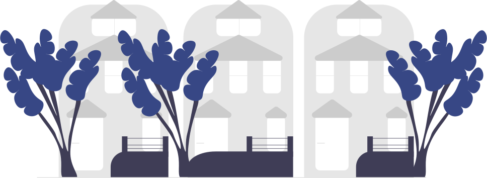

In July 2021, news broke that UC San Diego Health, one of the largest healthcare providers in the City of San Diego, had a massive data breach, a terrifying report. People with unauthorized access had achieved their goal and had the social security numbers, passwords, medical information, and credit card information of several of the employees, students, and patients within the system. As people who have family as alumni, staff, and students at UC San Diego, we wanted to make sure that our loved ones' privacy and information were secure. This large-scale breach all started from a simple spear phishing attack aimed at an employee. Thus, we made it our mission to inform the people of San Diego regarding the dangers of password security and how they could take initiative and prevent the success of password attacks.

During early Novemeber of 2019, Aeries Software, Inc. (the Student Information System for our highschool) was subjected to a data breach. Fortunately, the breach did not reveal any social security numbers or credit card information. However, it was revealed that attackers had the Parent and Student Login information, physical residence address, email addresses, and encrypted passwords. Having attackers know where each member of our group lived was uncomfortable, all of our friends and family were constantly on edge, knowing that our sensitive information was out in the open. It was also revealed that through their acess to the encrypted passwords, the attackers would be able to deconstruct weak passwords (another reason to have a strong password!) which would allow them to have unauthorized access to accounts and data stored within Aeries. Aeries accounts hold the healthcare records, transcripts, and other confidential information of thousands of students. Our highschool alone has rougly 2,350 students that may have had their data stolen, making this data breach dangerous to our community as a whole.
After learning about the data breaches within UC San Diego Health and Aeries, we began to realize that our community needed to be more educated regarding the importance of password security, something that could prevent more damage to our community in the future.
We interviewed Selena, an alumni of our highschool and a freshman at MIT, about her story as a woman in cybersecurity.
Question: How did you get into cybersecurity?
Answer: Me and my friend heard about CyberPatriot and thought the competition sounded cool. Then, we started a club [at CCA] and experimented on a [virtual machine]. I remember thinking that this was like a scavenger hunt, because you have to look for vulnerabilities. It was fun, so I kept doing it. I ended up not doing OS, and instead doing networking. No one knew what was going on with Cisco, so I self-studied a bunch... Then, during quarantine, we did CTFs because we heard about them from a friend and because we were bored. I found those to be very cool too.
Question: We heard that you wanted to pursue a career in cybersecurity. Is there a specific career in the field that interests you?
Answer: Actually, I don’t know if I'm going to pursue a career in cybersecurity. But, assuming I am, I would probably be a pentester or white hat hacker, because that sounds cool [and] fun! Otherwise, I would be interested in maybe becoming a security researcher.
Question: What has your overall experience with cybersecurity been like?
Answer: My experience with cybersecurity has required a very high level of independence, because there is a somewhat lack of resources, which forced me to self-study a lot of stuff. It wasn’t the best experience, since I wish I had someone to guide me at times.
Cybersecurity has a large range of jobs; let's dive deeper into the jobs that Selena mentioned during our interview.
Selena mentioned that she may want to be a pentester, which is short for penetration tester. A pentester is a career that is under the broader term of ethical hacking, they carry out penetration tests on a company's digital systems, to find what a attacker would do/exploit. This is mainly used to prevent attacks before they happen by predicting what a attacker would do (find out more about what a pentester does).
Selena also mentioned white hat hacking. Both white hat hacking and penetration testing are under the broader term of ethical hacking. However, unlike pentration testers, white hat hackers are allowed by their clients to use various technique; this includes social engineering tests, wireless network hacking, and more (find out more about white hat hacking).
The last job that Selena mentioned that she was interested in was being a security reasearcher. A security researcher stays up to date with the latest trends within the cybersecurity world. This allows the security researcher to identify the vunerabilities of a company based on their knowledge (find out more about what a secruity researcher does).